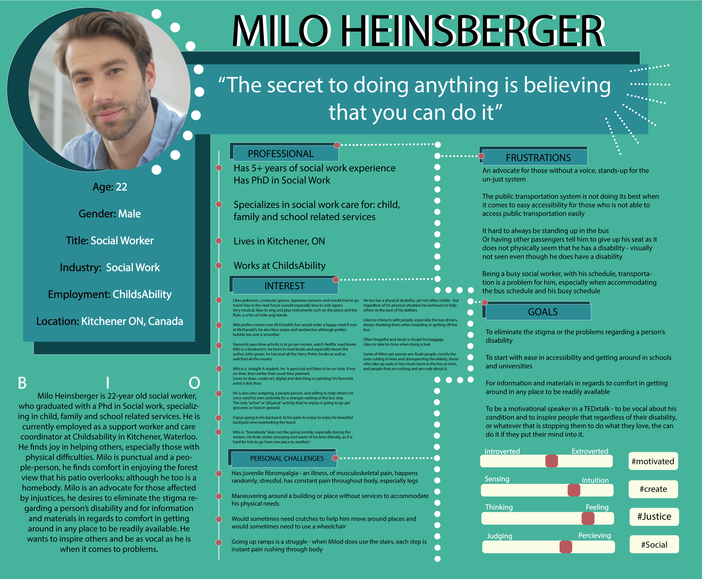
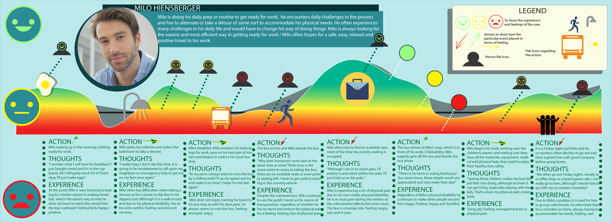
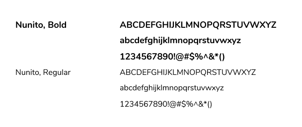

amway.
Mobile transportation app for accessibility matters
Course | GBDA 103
Position | UX Designer, UI Designer, User Researcher
Duration | September - November 2020
Tools | Illustrator, Balsamiq, Adobe XD
Overview
Background
This was a User Research and Design school project for my Global Business and Digital Arts 103 course (User Experience Design). I chose to revisit this project as a personal design challenge for myself; upon learning more about user research and design – I wanted to apply my knowledge and see if I can further improve the application, solution, UI, and overall concept as it has potential in being used in real life especially as it pertains to individuals with accessibility matters.
Project
We are to explore and create digital solutions to help eliminate or improve pain points within our community. This project challenges our design thinking and keeps our focus on the end-user and the market we are targeting.
Challenge: How can we use technology to alleviate or possibly eliminate the daily challenges of individuals with accessibility matters?
Research
Target
As the target market is very large, we wanted to focus on the more substantial part of the market, which is the physical aspect of accessibility matters. We live in an “always-on-the-go” environment, that requires a lot of movement, but for individuals with physical disabilities, it can be challenging for most to get around places especially if such locations are not accessibility friendly.
Interviews
We interviewed candidates who were willing to share their challenges when travelling to places in the town of Stratford and get a picutre of thier day in a life with a physical disability. They also shared their input on how transportation could be made easier for them.
- 1. Running Errands & Simple Hangouts are hard and awful Weather can make it harder
- 2. Lack of Mobility Aid or Services plus, the buses get Packed & Full
- 3. Lack of Information they can look to for Safety travels
Findings
This is what we found upon interviewing our candidates:
- 1. Disabilities are not always visible and it should not define them
- 2. Human Interaction goes a long way! However, their independence should also be respected
User persona


Ideation
Google maps & health apps
Google Maps provides the layout of roads, the locations of cities and towns, state boundaries, geographical features, restaurant reviews and satellite images. Can help with finding Acessibility friendly routes, forms of transportation, restaurants, parks, and other locations. Keeping track of your health and having a community within the app to provide information and their experiences provides users a sense of comfort and ease. This would help keep track of the users' well-being, current health and overall safety. This can be based on apps as myFitness Pal and Samsung Health App.

Ideation
My team and I then proceeded to build our idea & plan our application system, below are wireframe sketches of the app and a rough outline of the system:
These are the low fidelity mock-ups of how we thought our app would look like:
These are rough planning of what assets we'd like to include in our application as well as our slow design progress to our high fidelity mock-up:
Results
AmWay is a mobile app that provides transportation information, community, professional services, training, programs and travel planning for individuals with physical accessibility matters.
Easy to navigate and with a simple profile.
Users of the app can create an account as a trained Support Individual or as a Beneficary. Both users can connect, plan city-travels (with or without the assitance of a Support Individual) and participate in our in-app accessibility-travel programs.
From running errands to simple city-travels, why not schedule it all?
AmWay will show you the best mobility friendly routes and types of mobility friendly transportation to take to a place of your choice or recommended by a fellow Beneficiary user included in the map. A Support Individual will always be available for assitance if and when needed.
Don't sweat the transportation challenges, just filter them out
You get to customize your travels by filtering your trip: from avoiding highways, stairs and cities, to preferring types of mobility-friendly transportation and environment such as buses and spacious areas. You can make your travel as comfortable as possible.
All information needed available in the palm of your hand
AmWay contains useful information that can be accessed by all on-the-go such as: training to be a Transit Support person, Beneficiary Travel training, Using special services, Travel Plan, EZ-Routes, and connecting with other users.
You can attend training sessions while on-the-go
Online training is available to further understand the perks of AmWay, information in mobility aid and services as well as travel training for support individuals and beneficiaries such as: What to do in crowded vechicles and environments?
Safety is key, so is community, thus both is covered and available
You can connect with users, plan trips together and alleviate alleviate some transportation challenges. In a situation where medical help is needed, emergency contact is availble in the app, this app's future implementation of wearable tech would determine your current health as well.
Visual design

Final thoughts
Designing
Upon designing this app, we felt inconsistent with its process and solution thus posed many questions: The main challenge being: how would a mobile app that also requires certain amount of motor skills to navigate through be of help to individuals who are physically impaired? We wanted ease and comfort for users and not add another routinely task to their daily life. The IoT aspect is very technical and expensive to implement, especially since the IoT concept has not been solidified – this already pose many problems with regards to the user’s independence and privacy.
Next steps
Solidify idea and solution and ensure its proper use and benefits to the users as well as keep a user-centric design: we would hopefully create a more secure solution that would not disclose any health information about the users to the public even to private app users. Solidify the IoT integration within the app and make use of the concept to better help individuals with accessibility issues!